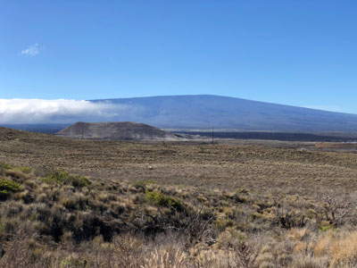
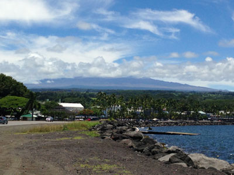
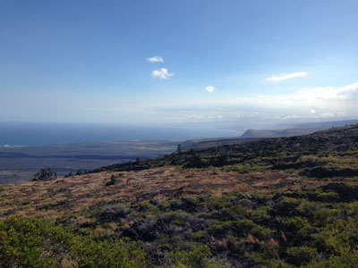
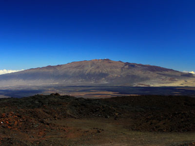
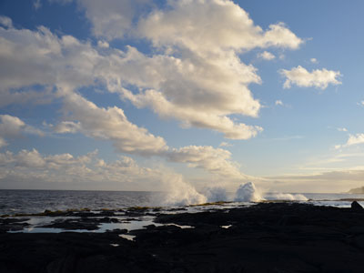
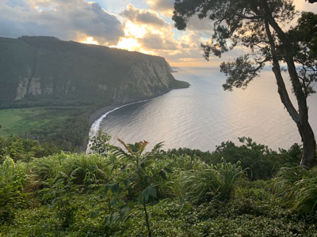

East Hawaii Island Travel Guide
Lush, rainforest-covered region known for its waterfalls, botanical gardens, volcanic landscapes, and a slower-paced, culturally rich lifestyle.
Places to See in East Hawaii

Famartin, CC BY-SA 4.0, via Wikimedia Commons; Image Size Adjusted
_near_milepost_39.5_in_Hamakua_District,_Hawaii_County,_Hawaii.jpg){kind=link}
Hamakua
Scenic coastal region known for rainforest-covered cliffs, cascading waterfalls, botanical gardens, and historic plantation towns.

English: NPS Photo, Public domain, via Wikimedia Commons; Image Size Adjusted
.JPG){kind=link}
Hawaii Volcanoes National Park
Expansive natural area featuring active volcanoes, lava tubes, craters, and diverse native ecosystems shaped by ongoing geological activity.

AlaskaDave, CC BY-SA 3.0, via Wikimedia Commons; Image Size Adjusted

Hilo
Tropical town known for its lush landscapes, frequent rainfall, vibrant cultural festivals, and access to natural attractions like waterfalls and botanical gardens.

AlaskaDave, CC BY-SA 3.0, via Wikimedia Commons; Image Size Adjusted

Kau
Expansive rural region featuring black and green sand beaches, lava fields, coffee farms, and access to remote areas of Hawaiʻi Volcanoes National Park.

Nula666 (talk · contribs), CC BY-SA 3.0, via Wikimedia Commons; Image Size Adjusted
.jpg){kind=link}
Mauna Kea
Dormant volcano rising over 13,000 feet above sea level, home to world-class observatories, cultural sites, and a visitor station offering stargazing and educational programs.
niksnut, CC BY-SA 2.0, via Wikimedia Commons; Image Size Adjusted
.jpg){kind=link}
Mauna Loa
Massive shield volcano with a summit over 13,000 feet, offering rugged backcountry trails, remote cabins, and panoramic views of the island’s volcanic landscape.

Thomas Tunsch, CC BY-SA 3.0, via Wikimedia Commons; Image Size Adjusted
.jpg){kind=link}
Puna
Geologically active region with black sand beaches, lava tree molds, geothermal pools, and coastal roads winding through rainforest and lava fields.

KAP03, CC BY-SA 4.0, via Wikimedia Commons; Image Size Adjusted

Waipio Valley
Steep-sided valley with dramatic cliffs, black sand beach, waterfalls, and taro fields, accessible only by guided tour or from a scenic public lookout.
Overview
The East Side of Hawaii Island, often referred to as the Big Island’s lush heart, offers a dramatically different experience from its sun-drenched western counterpart. Anchored by the historic town of Hilo, this region is a haven for nature lovers, with verdant rainforests, cascading waterfalls, and the ever-changing drama of Hawaiʻi Volcanoes National Park. Visitors can explore the mystical lava tubes of Nahuku, witness the glowing Halemaʻumaʻu Crater at night, and stroll through the vibrant Hilo Farmers Market, where tropical fruits and handmade crafts reflect the island’s rich cultural tapestry. The area’s high rainfall nurtures a spectacular array of botanical gardens, including the famed Hawaii Tropical Botanical Garden and the orchid-filled Akatsuka Gardens near Volcano Village.
Beyond its natural beauty, East Hawaii offers a glimpse into a slower, more authentic island lifestyle. The scenic Red Road in the Puna district winds through tree tunnels and past black sand beaches, while the Hamakua Coast reveals dramatic cliffs and hidden waterfalls like Akaka Falls. Hilo, the island’s largest town, retains a nostalgic charm with its historic bayfront, cultural festivals like the Merrie Monarch Hula Festival, and panoramic views of Mauna Kea and Mauna Loa. Whether soaking in warm tide pools, exploring ancient petroglyph fields, or watching lava meet the sea, East Hawaii invites travelers to connect deeply with the island’s elemental forces and enduring spirit.
This article uses material from the Wikipedia articles and official tourism pages for Tourism in Hawaii, Hilo, Hawaii, and Travel Photo Discovery, which are released under the https://creativecommons.org/licenses/by-sa/3.0/.